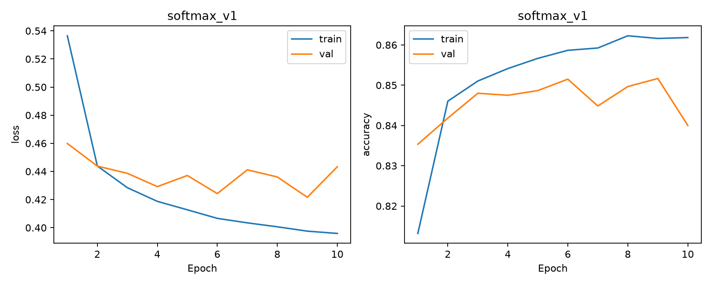
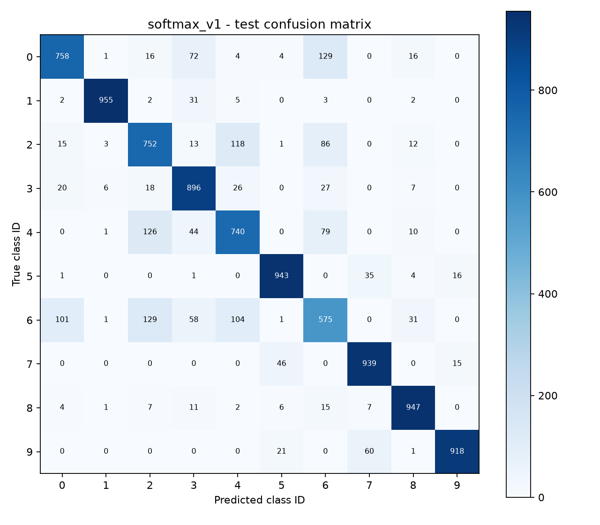
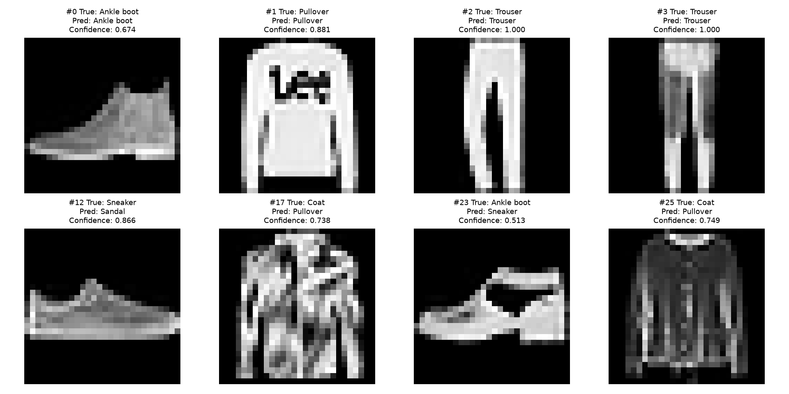
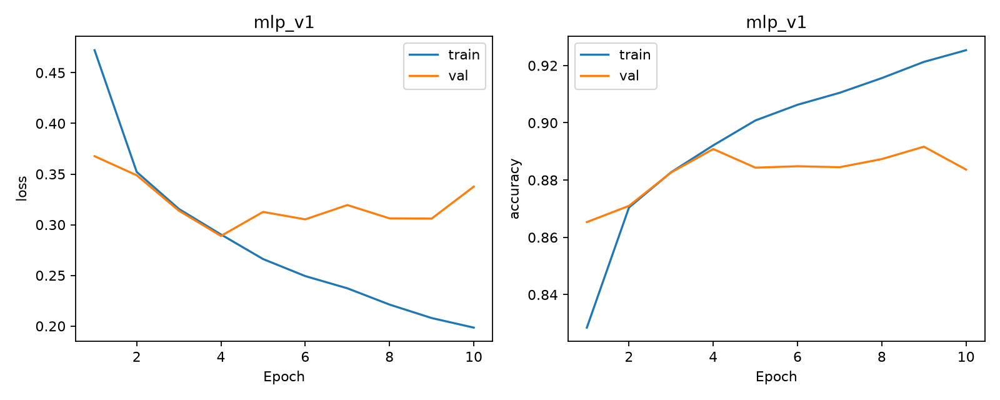
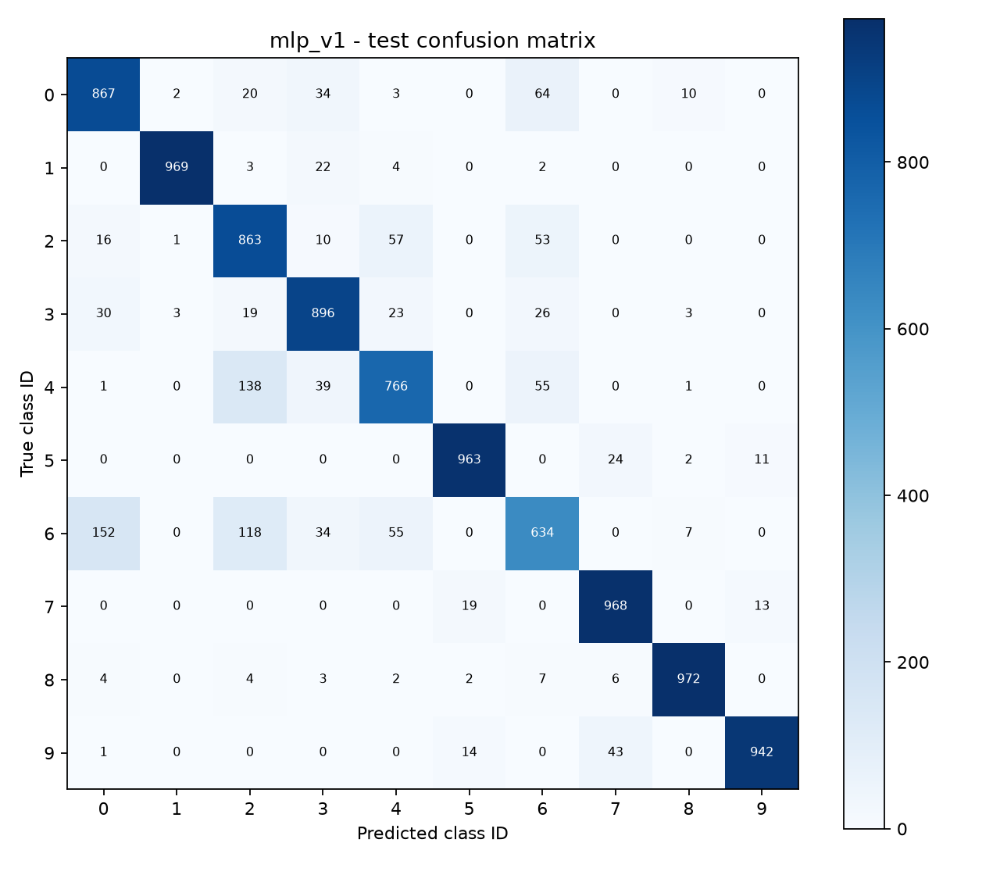
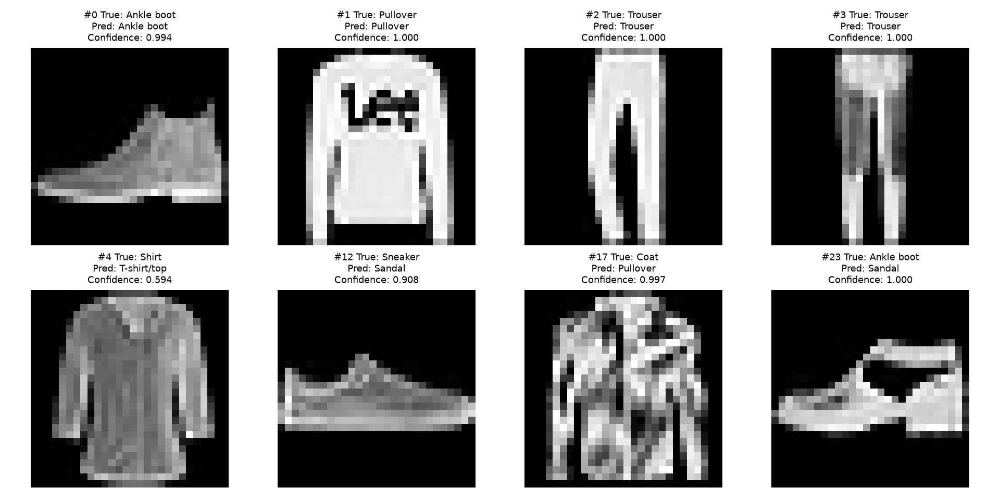
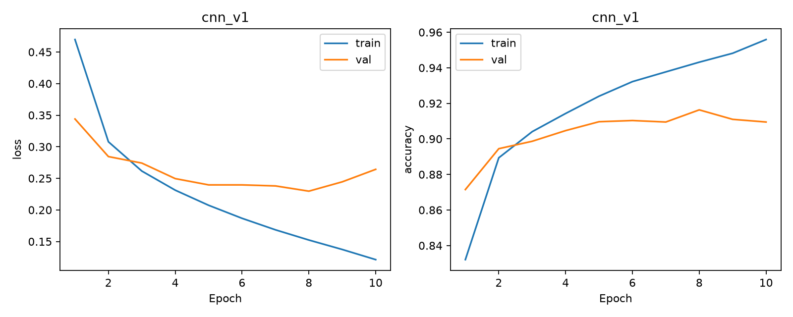
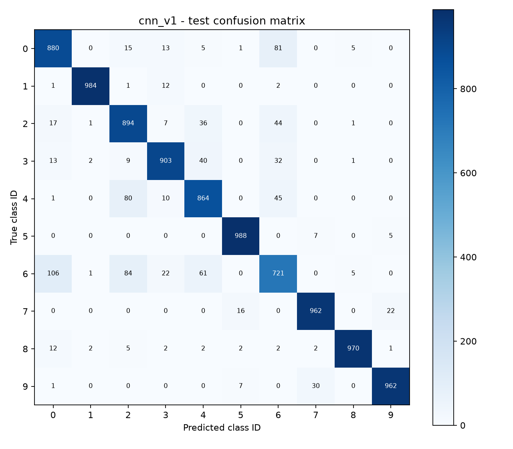
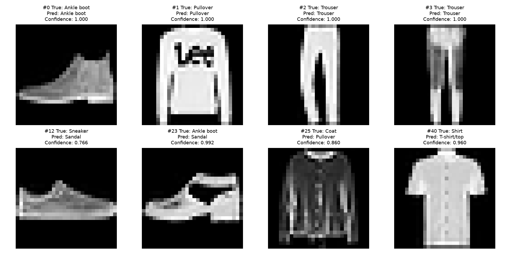
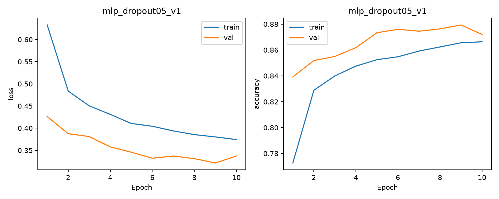

Bùi Tiến Đức - 2680018. 54,000 train / 6,000 validation / 10,000 test. Seed 42; 10 epochs. Checkpoint selected by validation accuracy, earliest tie.
| Run | Best epoch | Parameters | Val accuracy | Test accuracy | Test Macro-F1 |
|---|---|---|---|---|---|
| softmax_v1 | 9 | 7850 | 85.17% | 84.23% | 84.14% |
| mlp_v1 | 9 | 235146 | 89.17% | 88.40% | 88.31% |
| cnn_v1 | 8 | 206922 | 91.63% | 91.28% | 91.26% |
| mlp_dropout05_v1 | 9 | 235146 | 87.93% | 87.31% | 87.14% |
One seed only. Dropout experiment is a limited adaptation, not a complete reproduction of the original paper. Training accuracy uses train mode; validation uses eval mode. Timing includes train and validation loops, not full wall time. Test outcomes must not be used for further tuning.









